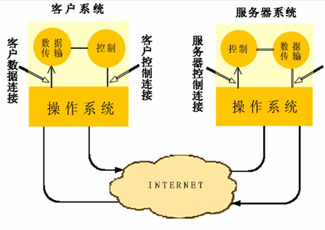
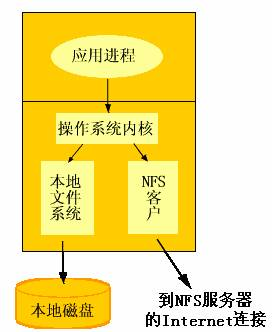

站长原创，版权所有ITEEDU，2011-05-26
由于缺少计算资源和存储空间, 不能在目标系统中直接开发,调试程序。 Embedded开发都采用宿主机-目标机(host-target)的方式，嵌入式Linux亦然。相对传统的嵌入式程序设计, Embedded Linux是将程序下载到目标系统中, 可以直接将开发主机中含有目标程序的文件系统mount到嵌入式Linux中, 直接在目标系统中运行。在下载之前，确保在开发主机（即宿主机）上已经调试无误，然后再下载到目机上来运行。
那么，host-target之间是通过那些方式进行通信的呢？
常见的有三种方式：nfs、tftp、ftp。
（1）网络文件系统 NFS 最初是在 UNIX 操作系统环境下实现文件和目录的共享。NFS 可使本地计算机共享远地的资源，就像这些资源在本地一样。由于 NFS 原先是 SUN 公司在 TCP/IP 网络上创建的，因此目前 NFS 主要应用在 TCP/IP 网络上。然而现在 NFS 也可在 OS/2、MS-Windows、NetWare 等操作系统上运行。
（2) 文件传送协议 FTP（File Transfer Protocol）是 Internet 上使用得最广泛的文件传送协议。FTP 提供交互式的访问，允许客户指明文件的类型与格式（如指明是否使用 ASCII 码），并允许文件具有存取权限（如访问文件的用户必须经过授权，并输人有效的口令）。FTP 屏蔽了各计算机系统的细节，因而适合于在异构网络中任意计算机之间传送文件。
在 Internet 发展的早期阶段，用 FTP 传送文件约占整个 Internet 的通信量的三分之一，而由电子邮件和域名系统所产生的通信量还要小于 FTP 所产生的通信量。只是到了 1995 年，WWW 的通信量才首次超过了 FTP。
（3)简单文件传送协议 TFTP（Trivial File Transfer Protocol）是一个很小且易于实现的文件传送协议。虽然 TFTP 也使用客户服务器模式，但它使用 UDP 数据报，因此 TFTP 要有自己的差错改正措施。TFTP 只支持文件传输而不支持交互，且没有一个庞大的命令集。TFTP 没有列目录的功能，也不能对用户进行身份鉴别。
其中FTP是基于TCP的，而TFTP是基于UDP的；
其中FTP和TFTP都是客户/服务器模型，如图3所示；

图3 FTP使用的两个TCP连接
其中NFS是通过远程调用RPC来实现的，如图2所示。

图2 操作系统中的NFS服务